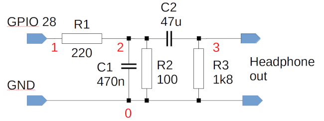
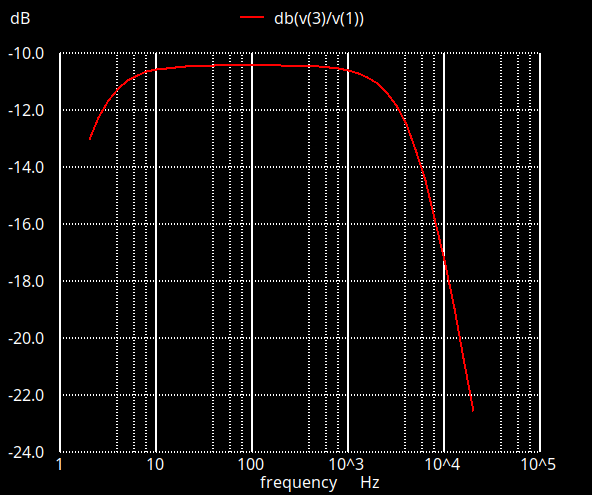

Why using crude PWM for sampled audio output on the Raspberry Pi Pico doesn’t sound that great

Pulse-width modulation (PWM) is a well-established method of digital-to-analog conversion. It’s inexpensive, easy to understand, and easy to implement. The desktop Raspberry Pi uses it for its default audio output, and many developers (including myself) use it on the Pico as well, which doesn’t have any built-in audio support.
The basic principle of PWM audio is simple: we generate a rectangular waveform whose period is the same as the sample rate, and set the duty cycle between 0% and 100%, according to the amplitude of the sample at a specific time. The duty cycle is the ratio of the ‘on’ to the ‘off’ time – a 100% duty cycle means that the output is ‘on’ all the time; 0% means ‘off’ all the time. A 50% duty cycle is half-on, half off.
So if the sample value is (say) 25% of the maximum at some point in time, we set the duty cycle to 25% at that time. If we generate this waveform at a Pico GPIO pin, then the average voltage will be about 25% of 3.3V.
Of course, this process isn’t sufficient on its own – we want a smoothly-varying analog audio signal, not a rectangular waveform. So we have to smooth, or filter, the rectangular waveform using analog components – resistors and capacitors, essentially.
By ‘crude’ PWM I mean using PWM with an absolute minimum of external parts. On the Pico, that means a single GPIO pin, and a couple of resistors and capacitors.
The Pico has built-in PWM controllers, so it’s easy to apply the PWM technique to generate audio waveforms, including from sampled sound files. But does it actually work in practice? Well, yes, with a suitably generous interpretation of the word ‘work’. Crude PWM can produce audio with quality good enough for sound effects and spoken alerts, but it’s nowhere near good enough for music.
In this article I explain why this is the case, and what can be done about it. Knowing how to improve the situation, we can make an informed choice whether it’s worth the cost and effort. Bear in mind that proprietary digital-to-analog (DAC) converter ICs and modules are not expensive, and they’re straightforward to use.
TL;DR – it will almost always be better to use a real DAC. Using crude PWM is only appropriate if you really have to minimize components, or you don’t have enough free GPIO pins to integrate a proper DAC.
If you’re interested, the C code I’m using for testing is in my GitHub repository.
Why you can’t just connect an audio device to a GPIO pin
Well, to some extent, you can. You could connect a high-impedance headphone directly between a GPIO pin and ground, and then drive it with PWM. If this works at all, it works because electromechanical properties of the headphone will implicitly do the filtering needed to reconstruct the analog signal from the PWM waveform. It’s most likely to work if you use a PWM frequency of hundreds of kHz – well beyond the range of human hearing.
Such a simple approach won’t work with low-impedance headphones, or a loudspeaker. These devices look to the Pico essentially as a short to ground; but you could just put a resistor in the series, which will make the low-impedance device look like a high-impedance device.
These trivial techniques do work, after a fashion. But there’s a problem.
The Pico is a single-ended (single-supply) device. On its own it can’t produce an AC output: its GPIO pins output either ground (or close to ground) voltage or supply voltage (or close to it, about 3.3V). There is no way to make the Pico output a negative (less than ground) voltage from a GPIO pin.
This means that if you connect a GPIO pin to an audio device, it’s going to try to pass a constant, DC current through the device. This current might be small, which is why sometimes we get away with it. But it’s not a good long-term approach.
As a minimum, we need a way to block this DC current from the audio device. We can do this easily enough using an ordinary capacitor. The problem is that a capacitor used this way creates a high-pass filter, and that’s the opposite of what we need to remove the PWM waveform – for that we need a low-pass filter. So as a minimum we’re going to need some combination of high-pass and low-pass filtering.
And, suddenly, our low-component-count solution doesn’t have as few components as we might have hoped.
The trouble with filters
For my application, I’ve implemented a variation of the RC circuit that the Raspberry Pi uses (see below).

The only significant difference in my circuit is that I’ve chosen components that set the low-pass cut-off to about 8kHz, rather that 20kHz. This is because in my application I’m using 16kHz sampling, so I can fit all the sample data in the Pico ROM (more on this point later).
This circuit has a voltage divider (R1/R2), a low-pass filter (R1/C1), and a high-pass filter (R1/C2). C2 is a comparatively large capacitance, because we want to pass frequencies right down to the bottom of the audio range, about 20Hz. The purpose of the voltage divider is to reduce the ~3.3V peak level of the PWM pin to about the 300mV RMS we need for sensitive headphones, or to connect to an amplifier.
Let’s have a look at the frequency response of this circuit, which I simulate using the following SPICE netlist.
Pico RC filter
Vi 1 0 dc 0 ac 1
R1 1 2 220
C1 2 0 470n
R2 2 0 100
C2 2 3 47u
R3 3 0 1800
.control
ac dec 10 2 20k
run
plot db(v(3)/v(1))
.endc
.ENDThe frequency response over the audio range looks like this:

The 3dB pass band extends from a few Hz to about 8kHz, as I said we needed. But the frequency response is still unsatisfactory and, to explain why, we need a bit of a theoretical diversion.
Nyquist, and all that
According to Nyquists’s theorem, to reconstruct a sampled waveform with perfect accuracy, we need to sample at twice the highest frequency in the original waveform. So, if human hearing extends to 20kHz, we need to sample at 40kHz or higher.
Most people who have at least dabbled in electronics know this. What not everybody knows is that Nyquist’s theorem only applies at all if we have a perfect reconstruction filter. That is, Nyquist assumes we have a perfect way to remove all frequencies above the cut-off point. If we’re sampling at 40kHz, we must remove all frequency components above 20kHz, and none below this frequency.
Such a perfect low-pass filter does not exist, and cannot be made.
And that’s the problem with the simple filter I showed above. Ideally, it needs to cut off sharply at 8kHz, for a 16kHz sampling frequency. It doesn’t, though – there’s significant pass-through at 10kHz, and even 20kHz. I can’t cut off more of the components above 8kHz without also affecting those in the band we want to pass.
This simple RC filter is described as first-order: although it has two filter elements – one low-pass and one high-pass – each element has only one RC combination. A filter like this has a frequency response that rolls off smoothly, beyond its notional cut-off point. Filters of this kind are well-behaved – they don’t ‘ring’, for example, when subject to a step change in voltage. But they really aren’t suitable for digital to analog conversion. Ideally, we need a fourth-order filter, and that’s not something we can construct just using resistors and capacitors – not the kind you can buy from Farnell or RS, anyway.
How do real DACs solve this problem? And can we do the same thing with the Pico?
Since we can’t easily make an analog filter with a suitable specification, we cheat, and use oversampling. we take the digital data we get from sampling at 40kHz (or whatever), and mathematically synthesize what we would have got at, say, 192kHz. This doesn’t get us any new samples, not really – we can’t make data that isn’t there. But if we want to filter everything above 20kHz, that’s a whole lot easier if there’s nothing in the raw PWM waveform between 20kHz and 192kHz. We can do this filtering using a much simpler analog circuit, than if we have to cut off cleanly between 20kHz and 40kHz.
We can apply this oversampling technique on the Pico. We just set the PWM clock frequency to, say, four times the sampling frequency, and then output each sample four times in a row. The trivial computation required to do this is quite within the capabilities of a Pico. Ideally, we ought to interpolate between the samples, rather than just repeating them – repeating the samples generates artefacts of its own. Still, a measure of oversampling is possible on the Pico.
Does it work? Well, kind-of. I can hear a slight difference between no oversampling and two-times oversampling, but little beyond that point. It’s worth experimenting in this area, but I suspect that inadequate analog filter behaviour probably isn’t the limiting factor in audio performance on the Pico.
GPIO lines aren’t designed for analog output
One of the great things about digital electronics is precisely that it’s not analog. That is, a digital circuit isn’t particularly bothered by a bit of noise. For a Pico GPIO pin, a logic ‘1’ is any voltage over about 2V, and a ‘0’ anything below about 1V. Noise would have to be enormous to generate a logical error that makes a ‘1’ read as a ‘0’. This is exactly why digital electronics is such powerful approach to computation.
Precisely because that’s the case, digital designers don’t have to worry much about how noisy their data lines are. The GPIO pins on a Pico are very noisy indeed, with impressed voltages in a spanning a wide frequency band, including the audio range.
The simple high/low-pass filter I showed above is designed to pass frequencies in the audio range. It has to, of course, or we wouldn’t hear anything. If the GPIO outputs are subject to noise in the audio range, then no amount of filtering will help – the filter will specifically include the unwanted noise.
The way to get around this problem, in a real DAC, is to pass the digital signals through a buffer that uses a stabilized power supply. Then the digital lines can be as noisy as they like (up to a point) – the analog filter circuit is fed from the stabilized power supply, not directly from the digital signals. The buffer is essentially cleaning up the digital signals.
Can we do this with the Pico? Sure we can. But we need a stabilized power supply and the appropriate buffers. These things aren’t expensive, but they add to the component count.
In my experience, noise on the Pico’s GPIO pins is probably the worst offender, for giving us poor audio quality. It’s definitely worth trying to tackle this problem. If you don’t want the additional components to clean up the signals properly, there is a dirty trick, which is to use a poorly-documented feature that puts the Pico’s 3.7V power supply into “SMPS” mode. SMPS stands for “switching mode power supply”, and I presume that the Pico designers had in mind that users might feed the GPIOs into analog circuity. Here is the relevant code:
gpio_init (PICO_SMPS_MODE_PIN);
gpio_set_dir (PICO_SMPS_MODE_PIN, GPIO_OUT);
gpio_put (PICO_SMPS_MODE_PIN, 1);In my experience, this trick hugely reduces the noise in the audio output. But, because it’s essentially undocumented, I have no idea what side-effects it might have. Better to use a proper buffer, if the component budget allows for it.
Pop music
Although I’ve mentioned it before, it’s worth stressing that the Pico is a single-ended device. Its GPIOs can’t output a voltage lower than ground. When we’re using PWM, the PWM duty cycle extends from 0% to 100%. There’s no such thing as “-100%”. So if a sample value is ‘zero’, at some point, where do we set the PWM duty cycle? It can’t be 0%, because that would leave us with no way to handle a negative sample value.
The logical solution is to represent the sample ‘zero’ value as a 50% duty cycle. Then positive sample values will be output using a greater than 50% duty cycle, negative ones less than 50%. What this means is that the GPIO is outputting a square wave with 50% duty cycle even when no sound is playing.
We use a high-pass filter (i.g., a capacitor) to prevent this 50% duty cycle creating a constant current in the audio device. However, the capacitor has to charge. When the PWM is first switched on, there will be a very audible ‘pop’ in the audio signal, as the DC current rushes through the capacitor.
There isn’t really much that can be done about this, with a single-ended power supply. What’s needed is a differential amplifier with split (positive and negative) supplies, to subtract 1.15V (or thereabouts) from the GPIO voltage, before the low-pass filter. This will give an AC rectangular wave whose average voltage is zero for a zero sample value. This subtraction can be implemented using an op-amp and a handful of resistors, but it does require the provision of a split supply.
Getting the jitters
So far, we’ve considered what can be done at the purely analog level to improve sound quality. However, we still have to think about the digital domain.
Suppose we’re setting a PWM frequency of 16kHz, and we want to feed a new sample into the PWM controller accurately at the start of each PWM period.
The problem is that it takes time to do that – the PWM controller runs asynchronously of the application, and it’s not entirely clear what happens if you push new values into the PWM controller in the middle of a cycle. Aligning the program to the PWM controller can be tricky.
Fortunately, the Pico can generate an interrupt at the end of each PWM cycle. So all we have to do to keep everything in sync is to clock in a new value to the PWM controller every time the interrupt fires. In my sample code, I used an interrupt service routing to clock sample values from flash ROM into the PWM controller.
‘Jitter’ is any error in the timing of a change to the output level of a digital-to-analog converter. We hear Jitter as a kind of harmonic distortion. At hi-fi audio sampling frequencies, designers aim to keep jitter down to nanosecond levels, but there’s little evidence that anybody can hear jitter that small. We can certainly hear it when it gets to tens of microseconds, though.
The use of interrupt-based timing reduces the jitter associated with clocking data into the PWM controller. However, it doesn’t do anything to mitigate timing errors in the PWM controller itself, or in the Pico’s system clock. I don’t have any particular reason to think that these errors are huge, however – not compared to all the other errors we have to contend with.
Let’s not forget the obvious…
Any application using sampled audio on a Pico has cope with the fact that the Pico has limited storage. Sampled audio is notorious for using a lot of storage.
There are essentially three ways around the storage problem: reduce the audio quality, compress the data, or increase the storage. Of these, reducing the quality is by far the easiest and cheapest. That’s the approach I’m taking, anyway. But even at 16kHz and 8 bits per sample, the entire flash of the (Version 1) Pico will only hold two minutes of audio – not allowing for any program code.
If you want CD-quality sound, you’re down to about ten seconds.
Compression (e.g., MP3) is possible, but it’s CPU-intensive, and the Pico doesn’t have much RAM, either, to do the computation in. The Pico can certainly read audio data from an SD card, but at the expense (again) of increased component count.
The problem of storage doesn’t just affect PWM audio, of course – almost any Pico audio application could potentially run into the same problem. It’s perhaps more troublesome with applications using crude PWM because, by their very nature, designers are likely to be aiming for low cost and low component count.
But does it work?
Yes, crude PWM with a handful of resistors and capacitors works, up to a point. You have to pay close attention to power supplies and component layout, but it’s possible to get adequate sound quality from crude PWM for a range of applications. Spoken alerts are pretty comprehensible, for example. Human speech has a relatively low bandwidth, so it’s possible to use low sample rates (to reduce storage) and to design even a simple filter that will pass speech frequencies, while keeping out most of the cruft. Sound effects like bells, whistles, explosions, and the like also work fine. In my experience, these sounds are a bit ‘crunchy’ with 8-bit sampling, but they’re still perfectly recognizable.
What are the alternatives?
For about £5, you could buy a self-contained module that plays MP3 or WAV files from an SD card. These modules usually support a comparatively small number of sounds, selected at runtime by asserting particular input pins. These modules don’t usually sound wonderful – they’re designed for toys and greetings cards; but they’re inexpensive and easy to use, and typically have a lot more storage than the Pico. Of course, such an approach is only appropriate if your application requires a relatively small number of pre-recorded sounds.
For sample sizes, you could implement a resistor ladder. For example, for 8-bit samples, you’d need sixteen accurate resistors and eight GPIO pins. However, because the GPIO pins are so electrically noisy, I’m not sure this approach would work any better than PWM.
For a bit more money, a number of suppliers provide hi-fi quality DACs that attach directly to the Pico. You’ve still got to contend with the limited storage, but the sound quality is hugely better. These DACs typically use the I2S interface. This isn’t as easy to use on the Pico as crude PWM, but there’s plenty of sample code around.
You could, in principle, use the Pico’s USB Host mode with a USB DAC. These devices are widely available and produce decent audio at low cost. However, I’m not sure that driving a USB DAC would be straightforward; so far I’ve not seen any code that does it.
If you want the ultimate in audio quality, you could design your own DAC using a chip like the PCM5100. This isn’t a trivial job, because you still need careful layout and well-designed power supplies – it’s not just a case of slapping the chip onto a breadboard.
All in all, there are many ways to get audio output from a microcontroller like the Pico, and most of them offer better sound quality than crude PWM. However, crude PWM does work, after a fashion, and costs only pennies to implement.